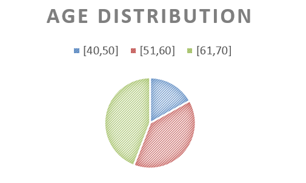
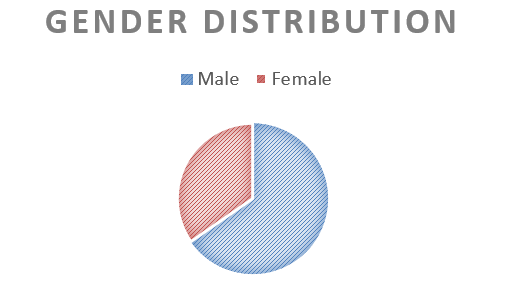
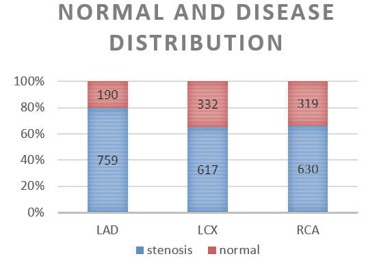

As we all know, medical datasets are rare and expensive because they are privacy, time-consuming, and labor-intensive. Thus, few medical datasets are open source. The deep learning model shows great power in many fields, but the powerful model relies on accurate annotation datasets, for the above situation, we cooperate with the second hospital of Jilin University. The coronary artery data annotation group has more than 10 people including professional doctors, medical students, and computer students. We spent more than six months doing accurate filtering and labeling, totally collected 949 patients’ coronary angiography videos. For each patient, about 10 videos were produced, the data came from patients visiting the second hospital of Jilin University from December 2016 to July 2019. However, the doctor removes the medical record, including:
- 1. infection and inflammation.
- 2. autoimmune diseases.
- 3. advanced liver and kidney insufficiency with previous tumors.
- 4. trauma and surgery in recent months.
- 5. patients under 40 years old and over 70 years old.
Age Distribution
Out of the 949 patients, 419 aged 61-70, 370 aged 51-60, and the number of patients that age between 40 to 50 is only 160. We can see that older people have greater risk.
Gender Distribution
There are 620 male patients and 329 female patients
Normal And Disease Distribution
Normal coronary artery and stenosis coronary artery’s distribution of all patients. The number of patients is 949, including 759 patients with LAD stenosis, 617 with LCX stenosis and 630 with RCA stenosis.
